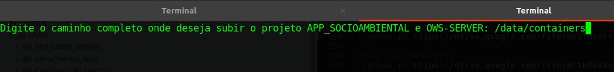
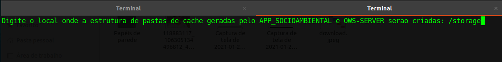
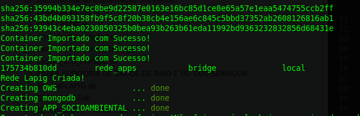
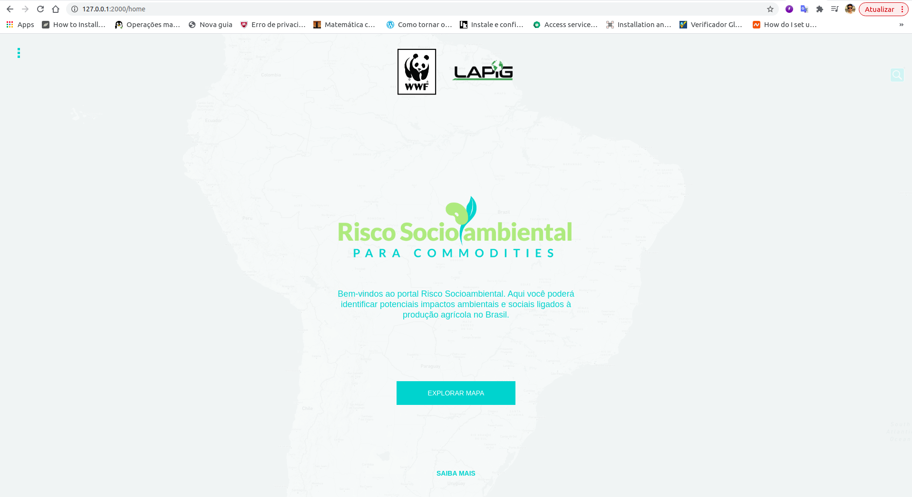
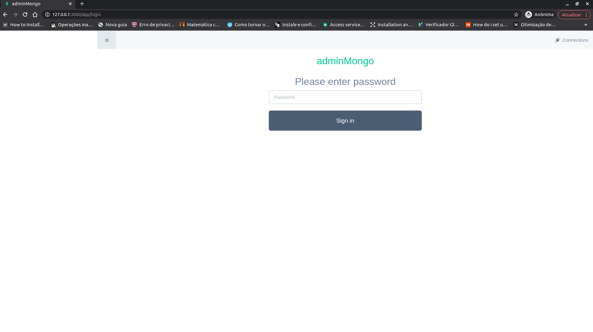
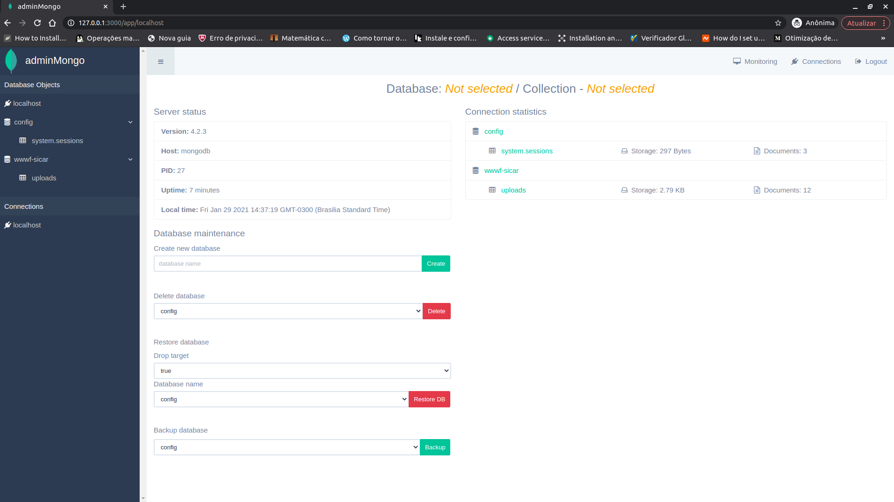

Introdução
Conforme detalhado na seção Arquitetura de Software, para execução da plataforma Risco Socioambiental ão necessárias 4 estruturas criadas e funcionais na máquina do usuário:
-
O Banco de Dados
wwf-sicarrestaurado no serviço do MONGODB. -
O serviço OWS Server devidamente configurado e executando em um IP e porta.
-
O Application Server e client (Front-end) da aplicação compilados e executando.
-
O Banco de Dados
indicadores.sqlitena pasta /storage/catalog/Ocultos, criada pelo script de inicialização.
Deployment da aplicação RISCOSOCIOAMBIENTAL e OWS Server
A fim facilitar/automatizar todo o processo de execução do Risco Socioambiental e do OWS Server foi criado um script que executa todos os passos necessários. Este script deverá executar as seguintes tarefas:
- Download do contâiner do
CONTAINER_OWS.tar.gz - Download do contâiner do
CONTAINER_SOCIOAMBIENTAL.tar.gz - Download do contâiner do
CONTAINER_MONGODB.tar.gz - Cria a estrutura de pastas necessárias (ows-cache, catalog, Ocultos e riscosocioambiental) para funcionamento do OWS Server e riscosocioambiental
- Constrói a aplicação do OWS Server e a disponibiliza em um IP e porta.
- Constrói a aplicação do RISCOSOCIOAMBIENTAL e a disponibiliza em um IP e porta.
- Constrói a aplicação do MONGODB-SERVER e a disponibiliza em um IP e porta.
Conforme mencionado anteriormente, a estrutura do OWS Server, RISCOSOCIOAMBIENTAL e MONGODB-SERVER foi construída com o apoio do Docker, portanto para instalação do mesmo, deve-se seguir os passos definidos nos tutoriais de acordo com o sistema operacional, seja ele Debian ou CentOS. Além do Docker, o script também faz uso das seguintes dependências:
Após instalação do Docker e das dependências mínimas para o script, deve-se executar o script [start-socio+ows.sh]
(https://drive.google.com/file/d/1YnTOs3A0ZA-DvtO2hqSHACSRuJGv99Op/view?usp=sharing) através do comando:
$ ./start-socio+ows.sh
Inicialmente o script irá pedir ao usuário que informe o local onde o OWS Server e RISCOSOCIOAMBIENTAL deverá criar a estrutura de pastas necessárias para funcionamento. Na imagem abaixo, o usuário terá informado o caminho /data/containers. É importante ressaltar que este deverá ser um caminho válido na máquina do usuário.

Em seguida, deve-se informar o diretório onde o cache gerado pelo OWS Server deverá ser armazenado. Na imagem abaixo, o usuário terá informado novamente o caminho /storage. porém, como o OWS Server está armazenado em um contâiner Docker, o script irá mapear automaticamente este caminho para /STORAGE dentro da estrutura do Docker.

Após a inicialização das variáveis necessárias, o script irá realizar automaticamente o download do contâiner do OWS Server, RISCOSOCIOAMBIENTAL,MONGODB-SERVER e importá-los corretamente no Docker instalado na máquina do usuário.

Após a importação correta do contâiner, o OWS Server deverá estar executando e aguardando requisições em localhost ou 127.0.0.1 na porta 5000. A imagem abaixo apresenta um exemplo de requsição feita através do curl no endereço http://127.0.0.1:5000/ows, que recebe uma pequena página HTML criada pelo MapServer.

Após a importação correta do contâiner, a plataforma RISCOSOCIOAMBIENTAL deverá estar executando e aguardando requisições em localhost ou 127.0.0.1 na porta 2000. A imagem abaixo apresenta um exemplo de requsição feita através do NAVEGADOR no endereço http://127.0.0.1:2000, que recebe a página do RISCOSOCIOAMBIENTAL.

Após a importação correta do contâiner, o MONGODB-SERVER deverá estar executando e aguardando requisições em localhost ou 127.0.0.1 na porta 3000 para o acesso WEB de gerencia e 27017 de acesso ao Banco de Dados . A imagem abaixo apresenta um exemplo de requsição feita através do NAVEGADOR no endereço http://127.0.0.1:3000, que recebe a página do adminMongo.


Após a execução do OWS Server, RISCOSOCIOAMBIENTAL e MONGODB-SERVER também é necessário mover o indicadores.sqlite presentes no link para dentro da pasta /storage/catalog/Ocultos criada no caminho informado pelo usuário no início do script.
Por fim, vale ressaltar que uma vez que o contâiner do OWS Server, RISCOSOCIOAMBIENTAL e MONGODB-SERVER esteja configurado e funcionando não é mais necessário executar o script start-socio+ows.sh. Já existe um script na raiz do contâiner, nomeado start.sh, que é responsável por executar o OWS Server imediatamente após o contâiner ser inicializado.
OBS: Dentro da pasta /catalog/Ocultos/ deve existir os dois arquivos indicadores.sqlite e indicadores.map, caso nao exista os dois nao irá funcionar a aplicação.
ATENÇÃO: Após o script finalizar por completo e todos os containers forem criados, deve-se copiar o arquivo indicadores.sqlite para dentro do diretório escolhido pelo usuário durante a execução do script, o arquivo deve ficar em /$DIRETORIO_ESCOLHIDO_PELO_USUARIO/storage/catalog/Ocultos, logo após copiar o mesmo deve ser reiniciado a aplicação para ela poder encontrar este arquivo essencial para seu funcionamento.
$ docker restart APP_SOCIOAMBIENTAL
Para verificar os logs gerados pelo OWS-SERVER deve-se entrar no contâiner do OWS-SERVER e verificar o arquivo ows-mapserv.log, tais ações podem ser alcançadas com a execução dos passos abaixo:
$ docker exec -it OWS bash
$ cd /APP/lapig-maps/src/ows/log
$ tail -f ows-mapserv.log
Em seguida, para verficar os logs gerados pela aplicação Risco Socioambiental, é necessário entrar no contâiner APP_SOCIOAMBIENTAL e verificar o arquivo app.out. Para tal, basta executar:
$ docker exec -it APP_SOCIOAMBIENTAL bash
$ cd /APP/riscosocioambiental/server
$ tail -f app.out
Por fim, caso deseje verificar se o banco Mongo (MONGODB-SERVER) foi restaurado com sucesso, basta executar:
$ docker exec -it APP_SOCIOAMBIENTAL bash
$ cd /APP/dump
$ cat log-restore.out
Criação do Ambiente de Desenvolvimento
A seguir será abordado como executar a aplicação RISCOSOCIOAMBIENTAL em ambiente de Desenvolvimento. Para o ambiente de desenvolvimento será detalhado um passo a passo partindo do pressuposto que um programador irá dar manutenção ou continuidade no RISCOSOCIOAMBIENTAL. Já o ambiente de produção, será disponibilizado via script que executa todos os passos para disponibilizar o RISCOSOCIOAMBIENTAL em uma porta da máquina que está sendo executado.
Assim como abordado na seção, o RISCOSOCIOAMBIENTAL foi construído com NodeJS como Application Server e Angular como cliente (WebMap Client). Portanto, primeiramente é necessária a instalação destes componentes na máquina do desenvolvedor. Para tal, pode-se seguir o passo-a-passo elaborado neste link
Para execução do RISCOSOCIOAMBIENTAL em ambiente de desenvolvimento, primeiramente é necessário realizar um fork do projeto para a sua conta pessoal do Github e em seguida executar um git clone do repositório do projeto.
Para inicializar o servidor de aplicação (Application Server) deve-se executar o passo-a-passo descrito na seção. A execução da mesma irá inicializar o Application Server em localhost na porta 3000. Para verificar o seu funcionamento, pode-se realizar a requisição abaixo em um navegador qualquer, que deverá apresentar um resultado semelhante a este.
http://localhost:3000/service/deforestation/largest?year=2019&amount=15
Em seguida, para inicializar o WebMap Client localizado na pasta src/client, basta navegar até a pasta client e instalar as dependências listadas no package.json através do comando:
$ npm install
Após a devida instalação das dependências, pode-se então compilar e inicializar a aplicação. Mais uma vez, a fim de facilitar, foi criado um script start.sh para inicializar o WebMap Client, portanto basta executar:
$ ./src/client/start.sh
Ao finalizar a compilação do projeto, a aplicação estará executando em localhost na porta padrão do Angular, que é a porta 4200. Portanto, para acessar a página Web criada pela aplicação, acesse pelo navegador:
http://localhost:4200
Após execução dos scripts o OWS Server estará executando na máquina do usuário na porta 5000 e o RISCOSOCIOAMBIENTAL também na máquina do usuário na porta 3000.